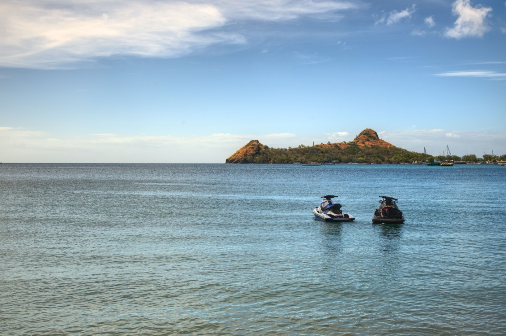

Moving to St Lucia in 2026
One of the world's most affordable second passports (from $240K, no residency required), a cost of living about half the US, and English everywhere, balanced against a crime advisory that rose in 2026. The honest picture.
St Lucia is best known for two things: the Pitons, those twin volcanic spires, and one of the world's most affordable second passports. You can buy citizenship here from $240,000 with no requirement to ever live on the island, the cost of living runs about half the US, and everyone speaks English. The one thing that changed for the worse in 2026 is the crime picture, so this guide gives you the upside and the caveat honestly.
The short version
- Passport from$240,000 to the National Economic Fund, covering you plus three dependents
- The unusual optionA $300,000 government bond, the Caribbean's only refundable route
- Time to citizenshipThree to nine months, no visit required today
- Changing soonECCIRA adds a 30-day stay from April 2026, which bites hardest on the cheap bond route
- Passport reachAround 156 countries visa-free, UK and Schengen included
- RequiredYou must apply through a licensed agent, not directly
Citizenship by investment (the headline draw)
St Lucia has granted citizenship to investors since 2015. The routes (2026):
- National Economic Fund donation: from $240,000, now covers a main applicant plus up to three dependents.
- Real estate: from $300,000 in an approved project (e.g., Rodney Bay resort residences).
- Government bond: from $300,000, the Caribbean's only refundable option.
No residency is required before or after approval; processing runs 3–9 months, and the passport carries visa-free access to ~156 countries including the UK and Schengen. A licensed agent is legally required to apply.
The three routes, and which money comes back
Dark green is money you spend. Grey is money you get back eventually, the real estate after a holding period and the bond at maturity. On paper the bond is the most expensive route and the cheapest one.
The rules change in 2026: ECCIRA
St Lucia was the last of the Caribbean nations to start selling citizenship, in 2015, and it is about to lose the freedom that made it competitive. Five islands, St Lucia, Grenada, St Kitts & Nevis, Antigua & Barbuda and Dominica, agreed in July 2025 to stop undercutting each other. The joint regulator is ECCIRA, expected between April and June 2026.
What it brings:
- A 30-day stay in your first five years as a citizen.
- Biometrics and interviews for applicants.
- Annual caps on passports issued.
- A shared $200,000 floor across all five islands.
Here is why that lands differently in St Lucia than anywhere else. If you take the bond route, most of your money comes back. Strip out the refund and what you actually pay for the passport is the fees, the lost interest on the parked capital, and your time. So when a 30-day residency requirement arrives, it is not a small addition to a large cost. On the cheapest route it becomes a meaningful share of the whole price.
The two caveats the agencies skip: it is proposed, not law, and needs ratifying across five parliaments. And people approved under current rules are expected to be grandfathered.
None of which is a reason to panic. It is a reason to understand what you are buying. If the appeal was a passport you never had to visit, that version is ending across the whole region, not just here.
Cost of living
St Lucia is genuinely affordable, overall about half the US, with rent ~71% lower. Most singles spend $1,150–$1,500/month excluding rent; a retired couple runs $2,000–$3,000 excluding rent. There's no capital-gains, inheritance, or wealth tax.
Residency (if you don't want the passport)
You can also go the slow route: a multiple-entry visa lets you live on-island up to a year; after two years you can apply for permanent residency, and citizenship follows after seven years of PR. Buying property requires an Alien Landholding License (waived if you buy an approved CBI property).
Is St Lucia safe?
This is the real 2026 caveat. On July 10, 2026 the US State Department raised St Lucia to Level 2, Exercise Increased Caution, warning that violent crime can occur anywhere, including tourist areas. It is not a “don't go”, the tourist and expat north (Rodney Bay, Cap Estate) remains comparatively calm, but it's a clear signal to choose your neighborhood carefully, use licensed taxis, and avoid isolated areas at night.
Healthcare: fine day to day, fly out for the serious stuff
Public and private care exist; quality is solid for routine needs but limited for complex procedures, so most expats carry international insurance with evacuation coverage to the US or Europe.
Where expats actually live

The friendly, established expat community concentrates in the north, Rodney Bay, Cap Estate, and Marigot Bay (“the most beautiful bay in the Caribbean”), with smaller pockets in Castries and Soufrière.
Is St Lucia right for you?
- Great fit if: you want an affordable second passport with no residency requirement, low costs, and no capital-gains tax.
- Think twice if: the elevated crime advisory would weigh on you, or you need top-tier local healthcare for complex conditions.
You can rent in Saint Lucia. Owning is a different question.
Plenty of people land in Saint Lucia and spend a decade renting because buying looked complicated. It usually is not. It is just unfamiliar. SORA designs and builds homes across the tropics, with our deepest roots in Panama and Costa Rica, where residency is straightforward and building costs a fraction of the coastal Caribbean. If the move is really about a place of your own in the sun, it is worth seeing what a fixed-price build looks like before you commit to any one island.
Frequently asked questions
How much is St Lucia citizenship by investment?
From $240,000 via a donation to the National Economic Fund (now covering a main applicant plus up to three dependents), or from $300,000 in approved real estate, or a $300,000 refundable government bond. No residency is required; processing takes 3–9 months and the passport gives visa-free access to about 156 countries. A licensed agent is required to apply.
Is St Lucia safe?
The US State Department raised St Lucia to Level 2 (Exercise Increased Caution) on July 10, 2026, citing crime that can occur anywhere, including tourist areas. It's not a “do not travel,” and the expat-favored north (Rodney Bay, Cap Estate) is comparatively calm, but you should choose neighborhoods carefully, use licensed transport, and avoid isolated areas at night.
How much does it cost to live in St Lucia?
About half the US. Most singles spend $1,150–$1,500/month excluding rent; a retired couple runs $2,000–$3,000 excluding rent. Rent is roughly 71% lower than the US, and there's no capital-gains, inheritance, or wealth tax.
Can you live in St Lucia without buying citizenship?
Yes. A multiple-entry visa allows up to a year on-island; after two years you can apply for permanent residency, and citizenship after seven years of PR. Buying property requires an Alien Landholding License unless you purchase an approved CBI property.
Sources & verification
Figures in this guide were checked against primary and authoritative sources on 27 July 2026. Immigration, tax, and cost figures change, so always confirm the current rules with the official body or a licensed professional before acting.
- Saint Lucia Citizenship by Investment Unit · official CBI program authority
- US State Department, Saint Lucia · Level 2 travel advisory (July 10, 2026)
- Global Citizen Solutions, St Lucia · corroborating cost-of-living & residency